- Version: 3.0
- Support: support.skywarriorthemes.com
To view this template in its full beauty please use Chrome or Firefox. IE makes kittens cry and everybody loves kittens... right?
Installation - Watch video
To install this theme you must have a working version of WordPress already installed. For more info on how to install WordPress please see the WordPress Codex: http://codex.wordpress.org/Installing_WordPress
Extract the zipped package downloaded from ThemeForest to your desktop, in the extracted package you will find the Orizon.zip file which is the WordPress theme.
You can install the theme in two ways:
-
FTP: Extract Orizon.zip file and upload the extracted folder to the /wp-content/themes/ folder on your server.
WordPress: Navigate to the Appearance -> Add New Themes -> Upload page. Select the Orizon.zip file. Press the Install Now button to upload and install the theme.
After uploading the theme, you have to activate it. Navigate to the Appearance -> Themes page to activate the theme.
Changing the URL structure (optional but recommended)
To change the URL structure so the URL looks more user-friendly (also is better for SEO) navigate to Settings -> Permalinks and under 'Common Settings' select 'Post name' or any other option EXCEPT default.
Customizing the theme - Watch video
To customize the look and feel of Orizon you need to use the Theme Barracks panel (Theme Options):
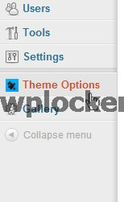
General settings
Inside the General Settings tab you will be able to customize the logo and favicon (small icon that appears in the browser tab) by uploading your own images:
Colours
In this div you will be able to choose a body colour and a background for your theme. Currently there is no option to upload your own, but I have provided the .PSD and HTML files so you can change the images and overwrite them. There are a lot of tutorials on Youtube on how to use Photoshop and you can always use the 30 days trial if you don't already have it.
Creating a post - Watch video
Aside from the general WordPress settings there are some important things that you have to consider when creating a post.
Categories
The categories impact directly on different divs of the site, so choose wisely which categories you are going to add to the post.
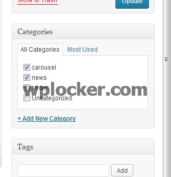Featured image
On the bottom right corner you will find a link called "Set featured image". This will allow you to upload and set a image for the post.
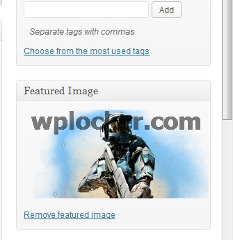NEW in version 3.0: Add custom image for the post
We have added an option to add an custom image for the post to make it look nicer on the site. Basically now you will have 2 images: One that is the whole website and one for the post itself. To add a custom image for the post please follow these steps:
- Upload your modified image in media
- Copy the direct link of the image
- In the post, scroll down to custom fields
- On the dropdown, select "inner-post-image"
- On the value field, paste your image link (please include http://)
- Click on Add custom field button on the left hand side and update the post
Review Info
Underneath the main text are you will be able to find the Review Info div. If you decide that you would like to create a review (for instance, rating a game or movie) rather than a normal post, you can set up different criteria/scoring for it. To reset to a normal post simply delete all the fields leaving them blank.
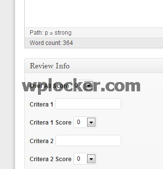
Widgets - Watch video
This template supports two widget sidebards: right side and footer. In both sidebars all the widgets are fully styled, with the exception of the search widget. Please delete the search widget if you haven't done it already. Because this template already has an integrated search, the default search widget from WordPress hasn't been styled and it may cause some trouble.
Adding widgets is very easy, just head to 'Appearance' and then 'Widgets'.
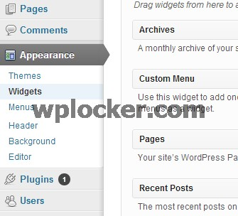Here you will be able to drag and drop the widgets that you want in one of the two sidebars. I would suggest having only one widget in the footer sidebar, as more than one would cause the footer to look too big.
Homepage - Watch video
The homepage is divided into different sections:
Slider
The slider is the top rotating banner and the most important part of the homepage since it displays the most important news to visitors.
You have different options for the customization of the sliders, and this can be accessed by clicking on the Slider tab inside Theme Barracks:
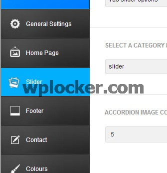
Carousel and General News
'Carousel' refers to the rotating posts underneath the Slider and 'General News' to the posts underneath the carousel.
By accessing the Homepage tab you will be able to change different aspects of these two elements:
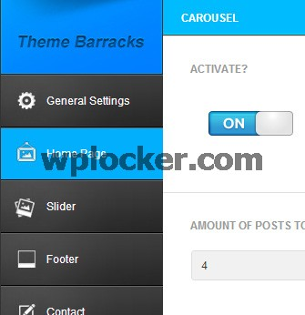
Creating a post list (category page) - Watch video
To create a fully working post list (category page) please follow these steps:
- Go to Pages and add a new one
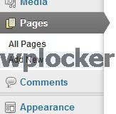 - After giving that new page a name you need to select the default template (it should be already selected as a default)
- Copy the following code and paste it in the text area:
[post category_name="news" totalposts="5"]
- Here you will need to modify the category, changing it to the one that you want your posts to display from. To do that simply replace 'News' with your category name. So if you category is called 'Fantasy' it will look like this:
[post category_name="Fantasy" totalposts="5"]
- 'totalposts' are the number of posts you want to show per page. After the number of posts that you selected is reached, it will create a pagination that allows you to access previous posts:
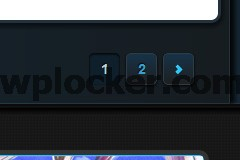
Quicker and easier way
As we saw in the previous tutorial there is a quicker way to create a category page. Basically just add a category to the menu, which will automatically add the page for you. The only difference between doing it manually is that you can select the number of posts that you want to show in the page since the automatic way only shows 5.
Creating a gallery - Watch video
Gallery creation is managed by the Gallery tab in the main WordPress admin panel under Theme Options:
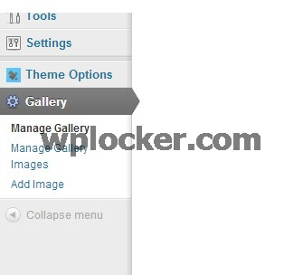
- First of all you will need to create a new gallery. You can do this by selecting 'Manage Gallery', clicking on 'Add New Gallery' on the top and giving it a name.
- Then you will need to add images to the gallery you just created. You can do this by clicking on 'Add Image' in the menu and uploading the images that you want.
- In 'Manage Gallery Images' you will be able to see which images are in which gallery and you will also be able to delete them.
Adding a gallery to a page
Creating a gallery page is very similar to creating a post list, but uses a slightly different code:
- Go to Pages and add a new one
- After giving that new page a name you need to select gallery template (it should be already selected as a default)
- Copy the following code and paste it in the text area:
[gallery id="1" showlimit="3"]
- Here you will need to modify the id. The id corresponds to the gallery id that you want to use, you can find this in the Gallery tab under 'Manage gallery'
- 'showlimit' field is the number of images that you want to show per page. After the number of posts that you selected is reached, it will create a pagination which allows you to access other images:
Footer gallery
As I quickly commented in the widgets tutorials the footer contains a gallery (latest media). You can select which gallery to display in Theme Options -> Footer -> FOOTERS GALLERY CATEGORY.
Other type of pages - Watch video
Full width
This page has no sidebar, meaning that the content extends the whole width of the site.
You can create a full width page by selected 'Full page' under 'Template'.
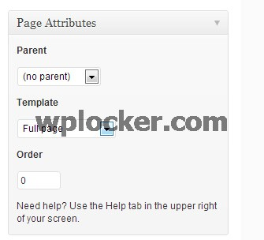
Contact
The contact page has a form that users can utilise to contact the email address of your choice. You can change the email and subject of the email in 'Theme Options' under the Contact tab.
To create a contact page select 'Contact' under 'Template'.
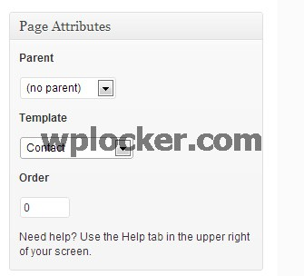
Further help
What I can help you with
I can help you with any questions about how the theme works and any bugs or errors you might find, for example:
- Which file is some particular code in?
- What can the theme do (or not do)?
- Are there future updates and enhancements planned?
- I found a bug/error!, etc.
What I cannot help you with
Themeforest does not require authors to give support in any way shape or form, nor does your purchase of a ThemeForest item come with any guarantee of support in any way. However, I still spend a great deal of time each week providing support to you guys because it's important to me that you guys get a top-notch product and service.
That said, it is not feasible for me time-wise to provide support beyond questions about how the theme works and fixing any bugs or errors. This includes:
- Customizing the theme
- Adding or modifying the theme functionality
- Teaching you how to use WordPress
- Teaching you how to use Adobe Photoshop or any image editing programs
- Support for external plugins.
Please do not abuse support
This support is provided completely free of charge. Please remember that a customized WordPress design would normally cost $1500-3000, and for $40-50 you are getting a bargain. For this reason, please do not expect me to tailor the theme to your individual needs, it is not physically possible to do this for each of you.
That said, if you find any errors or bugs, don't hesitate to let me know via the support forum and I will try to get it fixed as soon as possible. At the end of the day, I hope you guys enjoy using this template! If you are happy with it, please don't forget to rate it on ThemeForest! (I will love you forever ^^)